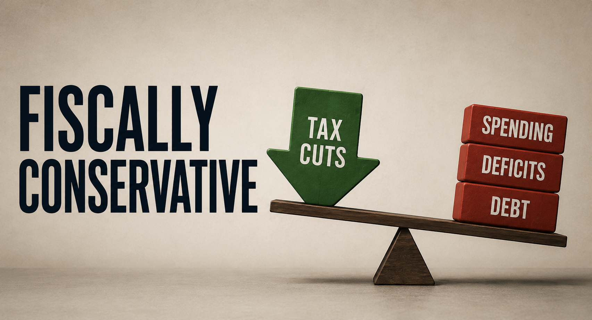

Fiscally Conservative
The phrase "fiscally conservative" signals moderation, rationality, and an innate preference for personal freedom paired with economic discipline. Yet in contemporary politics, the coherence of this label has become increasingly uncertain, and its underlying assumptions warrant closer scrutiny.
Read More